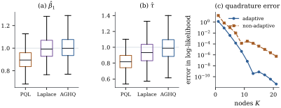

40.3 Integrated likelihood approximations
Everything the last section promised rests on the
integral Eq. 40.2.6, which has no
closed form except in the normal linear case. Fitting a
GLMM is therefore a numerical problem before it is a
statistical one, and the choice of method is not
innocent: three methods in common use can differ in the
second significant figure of
40.3.1. Why it is hard, and what makes it easier
For the normal linear mixed model
In Definition 40.2.1 write
(a) Factorization. If the random effects split into independent blocks
a product of
(b) Laplace approximation. Fix
Suppose
(c) Adaptive Gauss–Hermite quadrature. Let
It is exact whenever
(d) Penalized quasi-likelihood avoids the integral altogether, by a penalized maximization that is cheaper than either of the above and carries a bias that does not vanish. It is stated and proved separately as Proposition 40.3.2.
Proof.
(a) Under the stated independence the integrand factorizes and Fubini’s theorem applies, every factor being nonnegative.
(b) Substitute
(c) The substitution is a change of variable, and
Remark (What “formally” means in
(b)). The expansion in the proof interchanges
an infinite series with an integral over the whole line,
which the argument does not justify, and the remainder
can also be affected by the behaviour of
Two readings of (b). First, the accuracy of the
Laplace approximation is governed by the observations
per cluster, not by the sample size: a study
with
Part (c) matters because plain Gauss–Hermite
quadrature places its nodes where the prior is
large. When the data are informative the posterior of
import numpy as np
from numpy.polynomial.hermite import hermgauss
from scipy.optimize import minimize, minimize_scalar
BETA = np.array([-0.5, 1.0])
TAU = 1.0
def expit(z):
return 1.0 / (1.0 + np.exp(-z))
def cluster_mode(y, X, beta, tau):
"""Mode and curvature of log f(y_i | u) + log p(u), cluster by cluster."""
eta0, u = X @ beta, np.zeros(y.shape[0])
for _ in range(100):
mu = expit(eta0 + u[:, None])
step = ((y - mu).sum(1) - u / tau**2) / (-(mu * (1 - mu)).sum(1) - 1 / tau**2)
u = u - step
if np.max(np.abs(step)) < 1e-12:
break
mu = expit(eta0 + u[:, None])
return u, 1.0 / np.sqrt((mu * (1 - mu)).sum(1) + 1 / tau**2)
def loglik(y, X, beta, tau, K, adapt=True):
"""Integrated log-likelihood by K-node Gauss-Hermite quadrature.
Adaptive: centre and scale the nodes at each cluster's own mode and curvature.
K = 1 with adapt=True is exactly the Laplace approximation."""
node, w = hermgauss(K)
if adapt:
centre, scale = cluster_mode(y, X, beta, tau)
else:
centre, scale = np.zeros(y.shape[0]), np.full(y.shape[0], tau)
pts = centre[:, None] + np.sqrt(2) * scale[:, None] * node # (m, K)
eta = (X @ beta)[:, :, None] + pts[:, None, :] # (m, n, K)
cond = (y[:, :, None] * eta - np.logaddexp(0.0, eta)).sum(1) # (m, K)
prior = -0.5 * (pts / tau) ** 2 - np.log(tau) - 0.5 * np.log(2 * np.pi)
terms = np.log(w) + node**2 + cond + prior
return float(np.sum(np.log(np.sqrt(2) * scale) + np.logaddexp.reduce(terms, axis=1)))
def fit_ml(y, X, K, start=None):
p = X.shape[2]
obj = lambda par: -loglik(y, X, par[:p], np.exp(par[p]), K)
x0 = np.r_[np.zeros(p), 0.0] if start is None else start
r = minimize(obj, x0, method="Nelder-Mead",
options=dict(maxiter=8000, maxfev=8000, xatol=1e-8, fatol=1e-10))
return r.x[:p], float(np.exp(r.x[p])), -r.fun
M_demo, N_demo = 60, 5
rng_demo = np.random.default_rng(40_007)
x_demo = rng_demo.normal(size=(M_demo, N_demo))
X_demo = np.stack([np.ones((M_demo, N_demo)), x_demo], axis=2)
u_demo = rng_demo.normal(0, TAU, M_demo)
y_demo = (rng_demo.uniform(size=(M_demo, N_demo))
< expit(X_demo @ BETA + u_demo[:, None])).astype(float)
for K in [1, 5, 15]:
b, t_hat, ll = fit_ml(y_demo, X_demo, K)
print(f"AGHQ K = {K:2d}: beta = {b.round(4)} tau = {t_hat:.4f} loglik = {ll:.4f}")40.3.2. Penalized quasi-likelihood
The oldest practical method avoids the integral by treating the random effects as parameters with a penalty.
In Definition 40.2.1 let
(a) For fixed
(b) Iterating — update
(c) The resulting
Proof.
(a) Differentiating
(b) is the observation that maximizing Eq. 40.3.4 over
(c) We do not prove this. The asymptotic bias expansions, and corrections built from them, are given by Breslow and Lin (1995) and Lin and Breslow (1996); Example (Three methods on clustered binary data) measures the bias by simulation.
Remark (PQL is empirical Bayes).
Since
40.3.3. Monte Carlo alternatives
When
40.3.4. How different are the answers?
Simulate
| PQL | 0.8970 | 0.8168 |
| Laplace | 1.0022 | 0.9353 |
| adaptive Gauss–Hermite,
|
1.0087 | 0.9909 |
PQL attenuates the slope by
Panel (c) of Figure
40.3.1 separates the numerical question from the
statistical one. At a fixed parameter value, the error
in the integrated log-likelihood with

def weighted_lmm(z, X, W):
"""REML fit of a weighted random-intercept linear mixed model: z_ij = x_ij'b + u_i + e_ij
with Var(e_ij) = 1/W_ij and Var(u_i) = t2. Returns b, t2 and the predicted u."""
def solve(t2):
s, WX = W.sum(1), W[..., None] * X
den = 1 + t2 * s
XtVX = (np.einsum("mnp,mnq->pq", WX, X)
- t2 * np.einsum("mp,mq->pq", WX.sum(1), WX.sum(1) / den[:, None]))
XtVz = (np.einsum("mnp,mn->p", WX, z)
- t2 * np.einsum("mp,m->p", WX.sum(1), (W * z).sum(1) / den))
return np.linalg.solve(XtVX, XtVz), XtVX, den
def neg_reml(log_t2):
t2 = np.exp(log_t2)
b, XtVX, den = solve(t2)
r = z - X @ b
q = np.sum(W * r * r) - t2 * np.sum((W * r).sum(1) ** 2 / den)
ld = np.sum(np.log(den)) - np.sum(np.log(W))
return 0.5 * (ld + np.linalg.slogdet(XtVX)[1] + q)
opt = minimize_scalar(neg_reml, bounds=(-12.0, 6.0), method="bounded",
options=dict(xatol=1e-10))
t2 = float(np.exp(opt.x))
b, _, den = solve(t2)
r = z - X @ b
return b, t2, t2 * (W * r).sum(1) / den
def fit_pql(y, X, maxit=300):
"""Breslow-Clayton penalized quasi-likelihood: a linear mixed model on the working
response, refitted until it stops changing."""
beta, u = np.zeros(X.shape[2]), np.zeros(y.shape[0])
for _ in range(maxit):
eta = X @ beta + u[:, None]
mu = expit(eta)
v = np.clip(mu * (1 - mu), 1e-8, None) # working weights
z = eta + (y - mu) / v # working response
b_new, t2, u_new = weighted_lmm(z, X, v)
done = max(np.max(np.abs(b_new - beta)), np.max(np.abs(u_new - u))) < 1e-10
beta, u = b_new, u_new
if done:
break
return beta, float(np.sqrt(t2)), u
b_pql, t_pql, _ = fit_pql(y_demo, X_demo)
print(f"PQL : beta = {b_pql.round(4)} tau = {t_pql:.4f}")The contrast with Example (Grunfeld’s firms, again)
is instructive. That fit has
Idea. Report which approximation was used. “A random-intercept logistic model was fitted” is not a complete description when PQL and adaptive quadrature can differ by a tenth of the coefficient. With binary responses in small clusters, use quadrature with enough nodes that the answer stops moving, and say how many.
40.3.5. Exercises
A. Check your understanding
A GLMM with two correlated random effects per cluster
is fitted by non-adaptive Gauss–Hermite quadrature on a
product grid. How many likelihood evaluations per
cluster does
For each of the following, say whether PQL is likely
to be adequate and why: (a) counts with means in the
hundreds, ten per cluster; (b) binary responses, three
per cluster, with a large estimated
B. Practice
Verify Theorem 40.3.1(c) for
Solution. The one-point rule must
integrate
For a cluster of
Solution. For the logit,